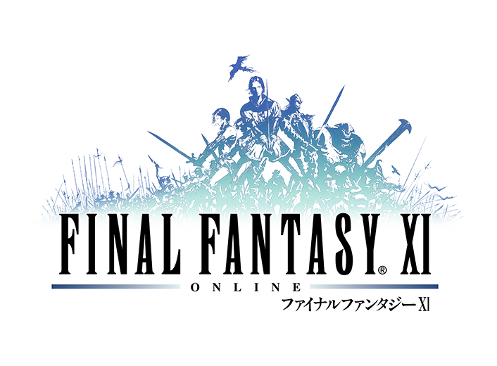

Looking at FFXI
Final Fantasy XI Online was the eleventh installment of the Final Fantsy series. It was released in 2002 in Japan for the Playstation 2 and Windows. It as later release in 2006 to the Xbox 360 allowing crossplay. Final Fantasy XI was

Final Fantasy XI Online was the eleventh installment of the Final Fantsy series. It was released in 2002 in Japan for the Playstation 2 and Windows. It as later release in 2006 to the Xbox 360 allowing crossplay. Final Fantasy XI was